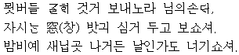
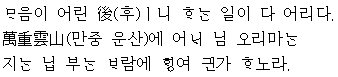
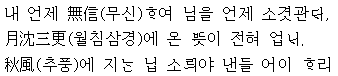
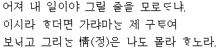

동짓달 기나긴 밤의 한가운데를 베어 내어
봄바람처럼 따뜻한 이불 속에다 서리서리 넣어 두었다가
정든 임이 오시는 날 밤이면 굽이굽이 펴리라.
[정든 임이 오신 밤이면 굽이굽이 펼쳐 내어 그 밤이 오래오래 새지 않도록 이으리라. (그 밤을 님과 함께 오래오래 보내겠습니다.)]
지은이 : 황진이(黃眞伊)
연대 : 미상
갈래 : 평시조, 단시조
성격 : 감상적, 낭만적, 연정적, 서정적
표현 : 은유법, 의태법
제재 : 동짓달 밤, 이불
주제 : 임을 기다리는 절실한 그리움 , 임을 향한 그리움과 사랑
특징 : 추상적 개념을 구체적 사물로 표현했고, 우리말의 묘미를 잘 살려 냄.
이미지 : 장단(長短), 냉온(冷溫), 유무(有無), 곡직(曲直)
출전 : 청구영언(靑丘永言)
풀이
산에 있는 버들가지를 골라 꺾어 보내오니 임에게
주무시는 방의 창가에 심어 두고 보시옵소서.
(행여) 밤비에 새 잎이라도 나면 (마치) 나를 본 것처럼 여기소서.
지은이 : 홍랑(紅娘, 연대 미상)
갈래 : 평시조
성격 : 감상적, 애상적, 여성적
표현 : 상징법, 도치법
제재 : 묏버들
주제 : 임에게 보내는 사랑
출전 : 청구영언(靑丘永言)
풀이
배꽃이 흩날리던 때에 손 잡고 울며 불며 헤어진 임
가을 바람에 낙엽 지는 것을 보며 나를 생각하여 주실까?
천 리 길 머나먼 곳에 외로운 꿈만 오락가락 하는구나.
지은이 : 계랑(桂娘)
연대 : 조선 전기
갈래 : 평시조, 연정가, 이별가
성격 : 감상적, 애상적, 여성적 편향,
표현 : 은유법
제재 : 이별과 그리움
주제 : 임을 그리는 마음
출전 : 청구영언(靑丘永言)
풀이
마음이 어리석으니 하는 일마다 모두 어리석다.
겹겹이 구름 낀 산중이니 임이 올 리 없건만
떨어지는 잎과 부는 바람 소리에도 행여나 임인가 하고 생각한다.
마음이 어리석으니 하는 일이 모두 어리석구나.
구름이 겹겹이 쌓여 험난하고 높은 이 산 중으로 어느(어찌) 임이 나를 찾아오겠는가 마는,
떨어지는 나뭇잎 소리와 바람 부는 소리에 혹시 임이 오는 소리가 아닌가 하노라.
지은이 : 서경덕(徐敬德, 1489-1546)
갈래 : 평시조, 정형시, 서정시
성격 : 감상적, 낭만적
표현 : 도치법, 과장법
특징 : 인간 본연의 순수한 감정을 노래하고 있고, 초장에서 일반적 진술, 중·종장에서 구체적 진술을 통하여 연역적 방식으로 시상을 전개함.
제재 : 기다림
주제 : 임을 기다리는 마음
출전 : <청구영언(靑丘永言)>
풀이
내가 언제 신의 없어 임을 언제 속였기에,
달 기운 한밤중에 님이 찾아올 듯한 뜻(기척)이 전혀 없네.
가을 바람에 떨어지는 나뭇잎 소리에 내 마음인들 어찌하리
내 언제 믿음 없어 임을 언제 속였기에
달 기우는 삼경에도 오시는 소리 전혀 없네.
추풍에 지는 잎소리야 낸들 어찌하리오
작자 : 황진이(선조 때)
갈래 : 정형시, 평시조, 서정시
연대 : 조선 전기
성격 : 연정가, 애련(愛戀)의 노래, 감상적, 애상적, 여성적
제재 : 연모(戀慕)의 정(情), 추풍에 지는 잎
주제 : 별한(別恨), 임에 대한 그리움, 임을 기다리는 간절한 마음
출전 : 청구영언(靑丘永言)
풀이
아아, 내가 한 일이야, 그리워할 줄을 몰랐던가
있으라고 했더라면 가겠는가마는 제가 굳이
보내고 그리워 하는 마음은 나도 모르겠구나.
아! 내가 한 일이 후회스럽구나. (막상 보내 놓고) 이렇게도 사무치게 그리울 줄을 미처 몰랐더냐?
(가지 말고 내 곁에 있으라고 말렸더라면) 있으라 했더라면 임이 굳이 떠나시려 했겠느냐마는 (내가) 굳이
보내 놓고는 이제 와서 새삼 그리워하는 마음을 나 자신도 모르겠구나.
작자 : 황진이(黃眞伊)
갈래 : 평시조, 단시조
성격 : 감상적. 애상적. 여성적 편향. 연정가. 이별가
표현 : 도치법. 영탄법
제재 : 보내고 그리워하는 정
주제 : 임을 그리워하는 마음, 이별의 정한
출천 : <진본 청구영언(珍本靑丘永言)>
풀이